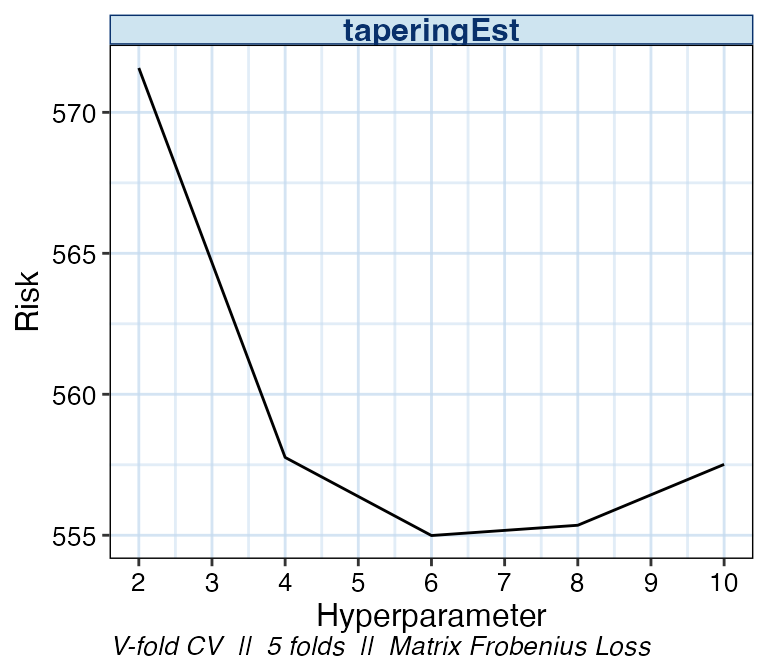
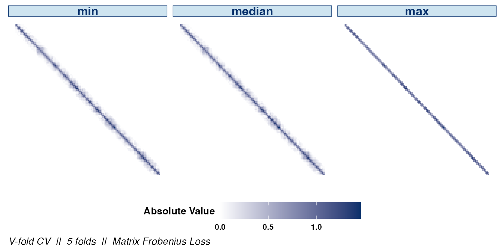
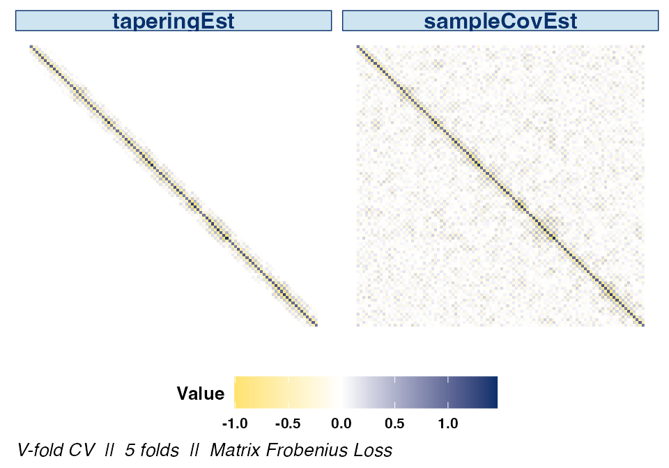
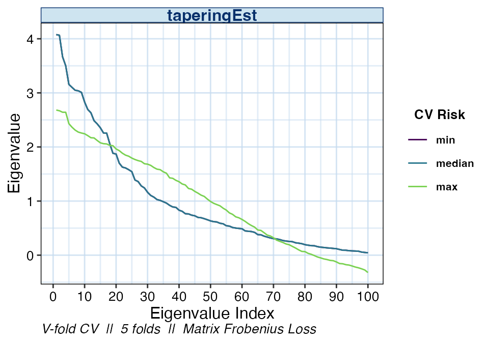
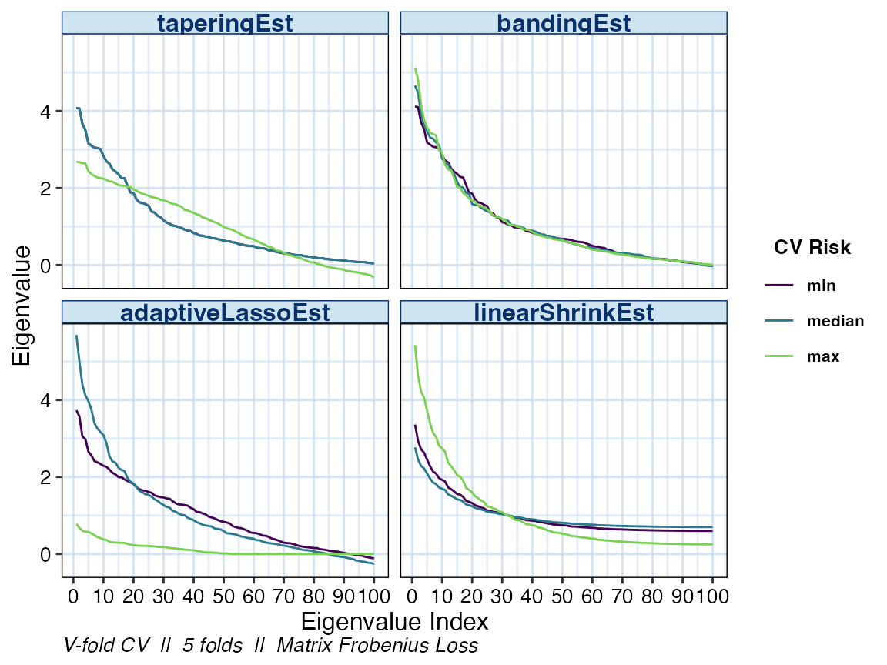
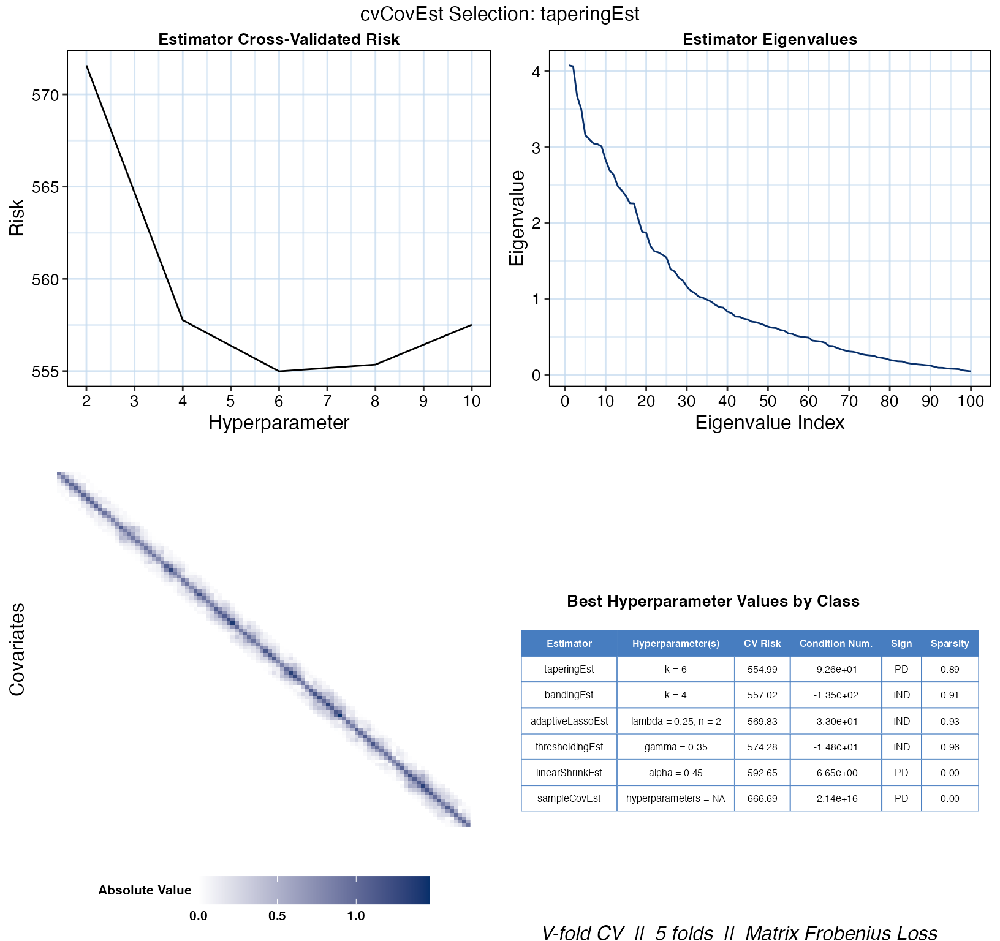

cvCovEst: Cross-Validated Covariance Matrix Estimationvignettes/using_cvCovEst.Rmd
using_cvCovEst.RmdWhen the number of observations in a dataset far exceeds the number of features, the estimator of choice for the covariance matrix is the sample covariance matrix. It is an efficient estimator under minimal regularity assumptions on the data-generating distribution. In high-dimensional regimes, however, this estimator leaves much to be desired: The sample covariance matrix is either singular, numerically unstable, or both, thereby amplifying estimation error.
As high-dimensional data have become widespread, researchers have derived many novel covariance matrix estimators to remediate the sample covariance matrix’s deficiencies. These estimators come in many flavours, though most are constructed by regularizing the sample covariance matrix, or through the estimation of latent factors. A comprehensive review is provided by Fan, Liao, and Liu (2016).
This variety brings with it many challenges. Identifying an “optimal” estimator from among a collection of candidates can prove a daunting task, one whose objectivity is often compromised by the analyst’s decisions. Though data-driven approaches for selecting an optimal estimator from among estimators belonging to certain (limited) classes have been derived, the question of selecting an estimator from among a diverse collection of candidates remains unaddressed.
We therefore offer a general, cross-validation-based framework for covariance matrix estimator selection to tackle just that. The high-dimensional asymptotic optimality of selections are guaranteed based upon extensions of the seminal work of Dudoit and van der Laan (2003), Dudoit and van der Laan (2005), and van der Vaart, Dudoit, and van der Laan (2006) on data-adaptive estimator selection to high-dimensional covariance matrix estimation (Boileau et al. 2021). The interested reader is invited to review theoretical underpinnings of the methodology as described in Boileau et al. (2021).
Let there be a high-dimensional dataset comprising \(n\) realizations of \(i.i.d.\) \(p\)-length random vectors with a possibly nonparametric data-generating distribution. Our goal is to estimate these random vectors’ covariance matrix, which may be accomplished using our general cross-validated estimator selection framework.
Given a library of candidate estimators, a loss function, and a choice of cross-validation scheme, cvCovEst will identify the asymptotically optimal estimator of the covariance matrix from among all candidates. It subsequently estimates this parameter using the selected candidate. An example is provided below. Lists and brief descriptions of implemented candidate estimators, loss functions, and cross-validation schemes are provided in the sequel.
## cvCovEst v1.0.1: Cross-Validated Covariance Matrix Estimation
set.seed(1584)
# generate a 50x50 covariance matrix with unit variances and off-diagonal
# elements equal to 0.5
sigma <- matrix(0.5, nrow = 50, ncol = 50) + diag(0.5, nrow = 50)
# sample 50 observations from multivariate normal with mean = 0, var = Sigma
dat <- mvrnorm(n = 50, mu = rep(0, 50), Sigma = sigma)
# run CV-selector
cv_cov_est_out <- cvCovEst(
dat = dat,
estimators = c(
linearShrinkLWEst, denseLinearShrinkEst,
thresholdingEst, poetEst, sampleCovEst
),
estimator_params = list(
thresholdingEst = list(gamma = c(0.2, 0.4)),
poetEst = list(lambda = c(0.1, 0.2), k = c(1L, 2L))
),
cv_loss = cvMatrixFrobeniusLoss,
cv_scheme = "v_fold",
v_folds = 5,
)
# print the table of risk estimates
cv_cov_est_out$risk_df## # A tibble: 9 × 3
## estimator hyperparameters cv_risk
## <chr> <chr> <dbl>
## 1 linearShrinkLWEst hyperparameters = NA 357.
## 2 poetEst lambda = 0.2, k = 1 369.
## 3 poetEst lambda = 0.2, k = 2 372.
## 4 poetEst lambda = 0.1, k = 2 375.
## 5 poetEst lambda = 0.1, k = 1 376.
## 6 denseLinearShrinkEst hyperparameters = NA 379.
## 7 sampleCovEst hyperparameters = NA 379.
## 8 thresholdingEst gamma = 0.2 384.
## 9 thresholdingEst gamma = 0.4 505.
# print a subset of the selected estimator's estimate
cv_cov_est_out$estimate[1:5, 1:5]## [,1] [,2] [,3] [,4] [,5]
## [1,] 1.1725637 0.5219385 0.4813226 0.5576840 0.6719526
## [2,] 0.5219385 0.9364171 0.5591108 0.4390799 0.6766744
## [3,] 0.4813226 0.5591108 1.0150440 0.4052703 0.6436765
## [4,] 0.5576840 0.4390799 0.4052703 0.9826984 0.4304168
## [5,] 0.6719526 0.6766744 0.6436765 0.4304168 1.0883278Covariance matrix estimators implemented in the cvCovEst package are catalogued in the following table. These estimators are fed to the cvCovEst function through the estimators argument as a vector. If these estimators rely on hyperparameters, then they must be passed to the estimator_params as a list. Depending on one’s assumptions — or lack thereof — about the true covariance matrix, one may choose to use a subset of these estimators or all of them. Of course, they may also be used as standalone functions.
| Estimator | Implementation | Description |
|---|---|---|
| Sample covariance matrix | sampleCovEst |
The sample covariance matrix. |
| Hard thresholding (Bickel and Levina 2008b) | thresholdingEst |
Applies a hard thresholding operator to the entries of the sample covariance matrix |
| SCAD thresholding (Rothman, Levina, and Zhu 2009; Fan and Li 2001) | scadEst |
Applies the SCAD thresholding operator to the entries of the sample covariance matrix. |
| Adaptive LASSO (Rothman, Levina, and Zhu 2009) | adaptiveLassoEst |
Applies the adaptive LASSO thresholding operator to the entries of the sample covariance matrix |
| Banding (Bickel and Levina 2008a) | bandingEst |
Replaces the sample covariance matrix’s off-diagonal bands by zeros. |
| Tapering (Cai, Zhang, and Zhou 2010) | taperingEst |
Tapers the sample covariance matrix’s off-diagonal bands, eventually replacing them by zeros. |
| Optimal Linear Shrinkage (Ledoit and Wolf 2004) | linearShrinkLWEst |
Asymptotically optimal shrinkage of the sample covariance matrix towards the identity. |
| Linear Shrinkage (Ledoit and Wolf 2004) | linearShrinkEst |
Shrinkage of the sample covariance matrix towards the identity, but the shrinkage is controlled by a hyperparameter. |
| Dense Linear Shrinkage (Schäfer and Strimmer 2005) | denseLinearShrinkEst |
Asymptotically optimal shrinkage of the sample covariance matrix towards a dense matrix whose diagonal elements are the mean of the sample covariance matrix’s diagonal, and whose off-diagonal elements are the mean of the sample covariance matrix’s off-diagonal elements. |
| Nonlinear Shrinkage (Ledoit and Wolf 2018) | nlShrinkLWEst |
Analytical estimator for the nonlinear shrinkage of the sample covariance matrix. |
| POET (Fan, Liao, and Mincheva 2013) | poetEst |
An estimator based on latent variable estimation and thresholding. |
| Robust POET (Fan, Liu, and Wang 2018) | robustPoetEst |
A robust (and more computationally taxing) take on the POET estimator. |
Note that cvCovEst only functions with estimators native to this package. If you’d like to request a new estimator implementation, please submit an issue to the queue.
Given a collection of candidate estimators, cvCovEst compares their conditional cross-validated risks to identify the optimal selection. The loss function used to compute these risks should reflect both aspects of the data-generating distribution and the goal of the estimation procedure. This package currently implements three loss functions:
| Loss | Implementation | Description |
|---|---|---|
| Matrix-based Frobenius | cvMatrixFrobeniusLoss |
The default, based on the Frobenius norm. Appropriate when the dataset’s features are of similar magnitudes. |
| Variance-scaled matrix-based Frobenius | cvScaledMatrixFrobeniusLoss |
A scaled version of the matrix-based Frobenius loss, where weights are the inverse of products from the sample covariance matrix’s diagonal. Appropriate when the features of the dataset are of different magnitudes. |
| Observation-based Frobenius | cvFrobeniusLoss |
Based on the Frobenius norm and the rank-1, observation-level estimates of the sample covariance matrix. Its selections are equivalent to that of the matrix-based Frobenius, though less computationally efficient. However, the optimality results of Boileau et al. (2021) rely on it. |
The choice of loss function is set trough the cv_loss argument. Like the candidate estimators, cvCovEst only supports loss functions implemented in this package. Please submit suggestions to the issue queue.
Two cross-validation schemes are currently supported by cvCovEst. Please consider filing an issue in the queue to request the implementation of another cross-validation scheme.
| Scheme | Details |
|---|---|
| V-fold | To use V-fold cross-validation, set the cv_scheme argument in cvCovEst to "v_fold", and set the number of folds through the v_folds argument. cvCovEst defaults to 5-fold cross-validation. |
| Monte-Carlo | To perform Monte-Carlo cross-validation, set the cv_scheme argument to "mc". Set the proportion of data to be used in each validation set using the mc_split argument, and the number of iterations to perform with the v_folds argument. |
In addition to selecting an optimal estimator, the cvCovEst package contains summary and plotting methods which highlight the statistical properties of the candidate estimators, and inform the performance of the selection framework. These tools help build intuition about these estimators’ behavior and allows for the evaluation of their performance over varying inputs.
The summary method for cvCovEst accepts an object argument, a named list of class cvCovEst, and a summ_fun argument, a character vector specifying the type of summary function to use.
These summary functions allow the user to quickly compare the performance of several classes of estimators and compute other metrics of interest. The choices of summ_fun and their outputs are described below:
| Summary | Implementation | Description |
|---|---|---|
| Empirical Risk by Estimator Class | empRiskByClass |
Returns the minimum, 1st quartile, median, 3rd quartile, and maximum of the empirical risk associated with each class of estimator passed to cvCovEst. |
| Best Performing Estimator by Class | bestInClass |
Returns the specific hyperparameters, if applicable, of the best performing estimator within each class. |
| Worst Performing Estimator by Class | worstInClass |
Returns the specific hyperparameters, if applicable, of the worst performing estimator within each class. |
| Empirical Risk by Hyperparameter | hyperRisk |
For estimators that take hyperparameters as arguments, this returns the hyperparameters associated with the minimum, 1st quartile, median, 3rd quartile, and maximum of the empirical risk within each class of estimator. Each class has its own tibble which are returned as a list. |
The plot method for cvCovEst allows users to visualize three main plot_types of the candidate estimators: covariance heat maps (heatmap), eigenvalue plots (eigen), and the empirical risk (risk) as a function of the hyperparameters (for applicable estimator classes). If users do not specify a plot type, then all three plots are combined into one figure for the optimal estimator selected by cvCovEst. Users can also achieve this by setting plot_type = "summary".
The heat maps and eigenvalue plots facilitate comparisons both within and between estimator classes by allowing multiple values to be passed as estimator and stat arguments.
Additional arguments specific to each plot_type are outlined below:
| Argument | Description |
|---|---|
| abs_v | If TRUE, then the absolute value of the covariance is mapped. Otherwise, the signed value is used. |
| Argument | Description |
|---|---|
| leading | If TRUE, then the k leading eigenvalues are displayed. Otherwise, the k trailing eigenvalues are displayed. |
| k | The number of leading or trailing eigenvalues to plot. |
These two additional arguments only apply to estimators with multiple hyperparameters:
| Argument | Description |
|---|---|
| switch_vars | If TRUE, the hyperparameters used for the x-axis and factor variables are switched. |
| min_max | If TRUE, only the minimum and maximum values of the factor hyperparameter will be used. |
To show how the plot and summary methods can be used, data is simulated from a predetermined covariance matrix following a Toeplitz structure. The data is then passed to cvCovEst along with a handful of estimators.
set.seed(1584)
toep_sim <- function(p, rho, alpha) {
times <- seq_len(p)
H <- abs(outer(times, times, "-")) + diag(p)
H <- H^-(1 + alpha) * rho
covmat <- H + diag(p) * (1 - rho)
sign_mat <- sapply(
times,
function(i) {
sapply(
times,
function(j) {
(-1)^(abs(i - j))
}
)
}
)
return(covmat * sign_mat)
}
# simulate a 100 x 100 covariance matrix
sim_covmat <- toep_sim(p = 100, rho = 0.6, alpha = 0.3)
# sample 75 observations from multivariate normal mean = 0, var = sim_covmat
sim_dat <- MASS::mvrnorm(n = 75, mu = rep(0, 100), Sigma = sim_covmat)
# run CV-selector
cv_cov_est_sim <- cvCovEst(
dat = sim_dat,
estimators = c(
linearShrinkEst, thresholdingEst, bandingEst, adaptiveLassoEst,
sampleCovEst, taperingEst
),
estimator_params = list(
linearShrinkEst = list(alpha = seq(0.25, 0.75, 0.05)),
thresholdingEst = list(gamma = seq(0.25, 0.75, 0.05)),
bandingEst = list(k = seq(2L, 10L, 2L)),
adaptiveLassoEst = list(lambda = c(0.1, 0.25, 0.5, 0.75, 1), n = seq(1, 5)),
taperingEst = list(k = seq(2L, 10L, 2L))
),
cv_scheme = "v_fold",
v_folds = 5
)The summary method is then used to compare the best performing estimators in each class:
cv_sum <- summary(cv_cov_est_sim)
cv_sum$bestInClass## # A tibble: 6 × 3
## estimator hyperparameter cv_risk
## <chr> <chr> <dbl>
## 1 taperingEst k = 4 789.
## 2 bandingEst k = 2 792.
## 3 adaptiveLassoEst lambda = 0.25, n = 1 812.
## 4 thresholdingEst gamma = 0.4 817.
## 5 linearShrinkEst alpha = 0.35 836.
## 6 sampleCovEst hyperparameters = NA 949.In this case, the tapering estimator with k = 4 achieves the lowest empirical risk. We can take a closer look at the estimator’s performance based on other possible hyperparameter values by hashing taperingEst from the hyperRisk list.
cv_sum$hyperRisk$bandingEst## # A tibble: 5 × 3
## hyperparameters cv_risk stat
## <chr> <chr> <chr>
## 1 k = 2 792 min
## 2 k = 2 792 Q1
## 3 k = 2 792 median
## 4 k = 8 801 Q3
## 5 k = 10 807 maxBy specifying plot_type = "risk", we can see the change in empirical risk as the value of k changes. A summary of the cross-validation scheme and loss function is displayed at the bottom of all cvCovEst plot outputs.
plot(cv_cov_est_sim, dat_orig = sim_dat, plot_type = "risk")
We can also examine the matrix structure as the value of k changes. Examining the overall sparsity of the resulting estimator can be useful since, in some cases, the assumption of sparsity is not warranted. Note that the absolute values of the estimate’s entries are displayed to emphasize the structural differences between choices of hyperparameters.

If the signs of the covariances are of interest, they can be displayed by setting abs_v = FALSE:
plot(cv_cov_est_sim, dat_orig = sim_dat, plot_type = "heatmap",
stat = c("min", "median", "max"), abs_v = FALSE)The difference between the optimal estimator selected by cvCovEst and the sample covariance matrix is clear when displaying their respective heat maps side by side.
plot(cv_cov_est_sim, dat_orig = sim_dat, plot_type = "heatmap",
estimator = c("bandingEst", "sampleCovEst"),
stat = c("min"), abs_v = FALSE)
We may also be interested in the eigenvalues of the various banding estimators. The distribution of eigenvalues relays information such as the condition number or the positive-definiteness of the resulting estimator. As with the other plot types, if the estimator argument is not specified, the default is to display the optimal estimator selected by cvCovEst.

Specifying multiple values in the estimator argument allows us compare the eigenvalues of the other estimator classes as well.
plot(cv_cov_est_sim, dat_orig = sim_dat, plot_type = "eigen",
stat = c("min", "median", "max"),
estimator = c("bandingEst", "thresholdingEst", "linearShrinkEst",
"adaptiveLassoEst"))
As previously mentioned, simply calling the plot method on the output of cvCovEst and providing the original data will result in a visual summary of the selected estimator.
plot(cv_cov_est_sim, dat_orig = sim_dat)